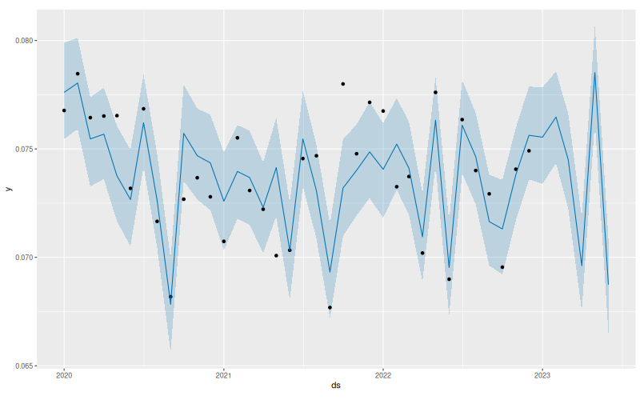
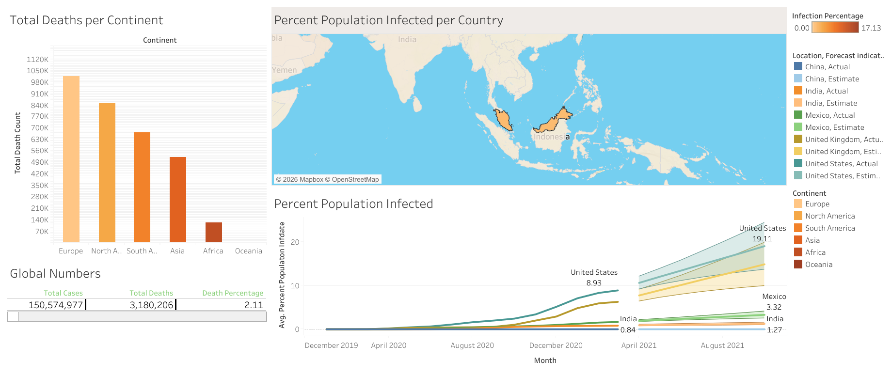

Actuarial Science Graduate | Insurance Operation | Data Analysis
Actuarial Science graduate from Universiti Teknologi MARA (UiTM) with hands-on experience in insurance operations at AmMetLife Insurance Berhad. I'm detail-oriented, comfortable working with large volumes of data, and quick to learn new systems. Alongside my internship, I build projects in R, Python, SQL, Tableau and Excel VBA. Available to start immediately.
Excel & Power QuerySQLRPythonTableauPower BIIntern – Policy Admin

Time-series forecasting of motor liability claims.
RProphet
Data prepared in SQL with a Tableau dashboard.
SQLTableau